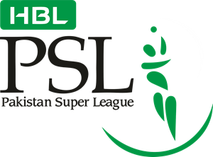

The Pakistan Super League (PSL) is a professional Twenty20 cricket league
The league was founded on 9 September 2015 with five teams by the Pakistan Cricket Board.
Contested during February and March of every year by six teams representing six cities of Pakistan.